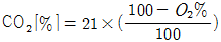
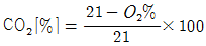
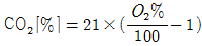
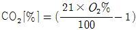
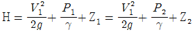
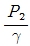
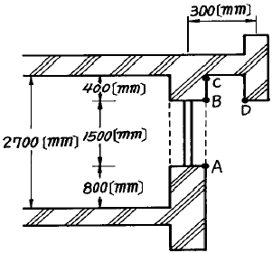

소방설비기사(기계분야) (2003-08-31 기출문제)
1과목: 소방원론
1. 화재발생시 소화작업에 주로 물을 이용한다. 물을 이용하는 주된 목적은 무엇 때문인가?
- 가연물질을 제거하기 위해서
- 물의 증발잠열을 이용하기 위해서
- 공기중의 산소공급을 차단하기 위해서
- 물의 현열을 이용하기 위해서
(정답률: 81%)

2. 정전기의 발생이 가장 적은 것은?
- 자동차를 장시간 주행하는 경우
- 위험물 옥외탱크에 석유류를 주입하는 경우
- 공기 중의 습도가 높은 경우
- 부도체를 마찰시키는 경우
(정답률: 80%)
3. 목재 화재시 초기의 연소속도가 매분 평균 0.75m∼1m씩 원형으로 확대한다면 발화 5분 후 연소된 면적은 약 몇m2정도 되는가?
- 38∼70
- 38∼78.5
- 40∼65
- 44∼78.5
(정답률: 36%)
4. 이산화 탄소의 소화능력을 1 로한 경우 분말 소화약제의 소화능력은 얼마인가?
- 1.1
- 1.4
- 2
- 3
(정답률: 50%)
5. 제1종가연물에 해당되는 물질은?
- 고무풀
- 대패밥
- 톱밥
- 석탄
(정답률: 31%)
6. 무창층에서 개구부로 인정되기 위한 필요 조건은?
- 개구부 크기가 지름 30cm의 원이 내접할 수 있는 것.
- 그 층의 바닥면으로부터 개구부 밑부분까지의 높이가 1.5m인 것.
- 내부 또는 외부에서 쉽게 파괴 또는 개방이 가능할 것.
- 창에 방범을 위하여 40cm 간격으로 창살을 설치한 것
(정답률: 58%)
7. 피난을 위한 시설물이라고 볼 수 없는 것은?
- 객석유도등
- 내화구조
- 방연커텐
- 특별피난계단전실
(정답률: 46%)
8. 다음 중 휘발유의 인화점은?
- -18℃
- -43℃
- 11℃
- 70℃
(정답률: 54%)
9. 가열된 금속분말에 물을 뿌릴때 수소(H2)가 발생하지 않는 것은?
- Co
- Na
- K
- Li
(정답률: 67%)
10. 가연성 액체에 점화원을 가져가서 인화된 후에 점화원을 제거하여도 가연물이 계속 연소되는 최저온도를 무엇이라 하는가?
- 인화점
- 폭발온도
- 연소점
- 자동발화점
(정답률: 67%)
11. 유류 저장탱크의 화재중 열류층(HEAT LAYER)을 형성, 화재의 진행과 더불어 열류층이 점차 탱크 바닥으로 도달해 탱크 저부에 물 또는 물기름 에멀젼이 수증기로 변해 부피팽창에 의하여 유류의 갑작스런 탱크 외부로의 분출을 발생시키면서 화재를 확대시키는 현상은?
- 보일오버(BOIL OVER)
- 스로프오버(SLOP OVER)
- 프로스오버(FROTH OVER)
- 프래시오버(FLASH OVER)
(정답률: 73%)
12. 황이나 나프탈렌 같은 고체위험물의 연소 형태는?
- 표면연소
- 증발연소
- 자기연소
- 분해연소
(정답률: 56%)
13. 자연발화의 예방대책으로 옳지 않은 것은?
- 습도가 낮은곳을 피한다.
- 통풍을 양호하게 한다.
- 열의 축적을 방지한다.
- 주의 온도를 낮게한다.
(정답률: 71%)
14. 스테판-볼쯔만(Stefan-Boltzman)법칙에 맞는 것은?
- 복사열은 절대온도의 제곱에 비례한다.
- 복사열은 절대온도의 4제곱에 비례한다.
- 복사열은 열전달 면적의 제곱에 비례한다.
- 복사열은 열전달 면적의 4제곱에 비례한다.
(정답률: 56%)
15. 피난계획의 일반적 원칙이 아닌 것은?
- 피난경로는 간단 명료할 것
- 두 방향의 피난동선을 항상 확보하여 둘 것
- 피난수단은 이동식 시설을 원칙으로 할 것
- 인간의 특성을 고려하여 피난계획을 세울 것
(정답률: 65%)
16. 소화원리에 대한 일반적인 소화효과의 종류가 아닌 것은?
- 질식소화
- 제거소화
- 기압소화
- 냉각소화
(정답률: 68%)
17. 방화안전관리시에 화점의 관리사항으로 볼 수 없는 것은?
- 화기책임자를 선정한다.
- 화기의 사용시간과 장소를 제한한다.
- 스프링클러설비 등을 사용 하여 화재를 진압한다.
- 가연물과 위험물의 보관방법을 개선한다.
(정답률: 35%)
18. 건축방화계획에서 건축구조 및 재료를 불연화하므로서 화재를 미연에 방지하고자 하는 공간적 대응은?
- 회피성 대응(回避性 對應)
- 도피성 대응(逃避性 對應)
- 대항성 대응(對抗性 對應)
- 설비적 대응(設備的 對應)
(정답률: 52%)
19. 인화성 물질이 아닌 것은?
- 기계유
- 질소
- 이황화탄소
- 에테르
(정답률: 60%)
20. 복사에 대한 설명으로 틀린 것은 ?
- 복사는 전자파의 형태로 에너지를 전달한다.
- 복사에너지의 전파속도는 빛과 같다.
- 복사에너지의 파장이 가시광선대에 들어가면 빛을 발한다.
- 진공속에서는 복사에 의한 전열이 이루어지지 아니한다.
(정답률: 76%)
2과목: 소방유체역학
21. 2차원 유체 흐름에서 한 점 A에서 유선 간격은 2cm 이고, 평균 유속은 20cm/s 이다. 다른 점 B에서 유선의 간격이 1cm일 때, 점 B의 평균유속은 몇 cm/s 인가?
- 10
- 20
- 40
- 80
(정답률: 35%)
22. 지름 150 ㎜인 원관에 비중이 0.85, 동점성계수가 1.33×10-4 m2/s인 기름이 0.01 m3/s의 유량으로 흐르고 있다. 이 때 관마찰계수는 약 얼마인가?
- 0.1
- 0.12
- 0.14
- 0.16
(정답률: 20%)
23. 분말 소화약제의 소화기능에 관한 설명 중 옳은 것은?
- 분말 소화약제는 불꽃의 연쇄반응을 화학적으로 차단시켜 소화하기 때문에 목재, 종이류의 가연물에는 효과가 없다.
- 주방에서 사용하는 식용유의 화재에는 분말 약제 중 탄산수소나트륨계 분말약제가 가장 적합하다.
- 분말 소화약제는 연소하는 가연물에 분말을 덮어 산소와 가연물과의 접촉을 차단하는 이른바 질식용의 소화약제이다.
- 칼륨염계 분말약제는 다른 분말약제에 비해 전기 공작물의 화재에 특히 소화효과가 높다.
(정답률: 28%)
24. 평행한 평판 사이로 유체가 압력차에 의해 층류로 흐르고 있을 때, 유체가 받는 전단응력은 어떻게 변화되는가?
- 중심에서 0이고, 벽면으로 직선형태의 응력변화를 가진다.
- 중심에서 벽면으로 곡선 형태의 응력변화를 가진다.
- 벽면에서 0이고, 중심으로 직선형태의 응력변화를 가진다.
- 벽면에서 중심으로 곡선 형태의 응력변화를 가진다.
(정답률: 20%)
25. 소화에 필요한 산소농도를 알 수 있다면 CO2 소화약제 사용시 최소 소화농도를 구하는 식은?




(정답률: 71%)
26. 베르누이 방정식

에서
은 무엇을 나타내는가?- 압력수두
- 위치수두
- 전수두
- 속도수두
(정답률: 60%)
27. 오일러(Enler's Equation) 방정식을 유도할 때의 가정 중 틀린 것은?
- 유체는 마찰이 없다.
- 유체의 점성력은 영 이다.
- 유체에 의해 발생하는 전단응력은 없다.
- 유체는 압축성 유체이다.
(정답률: 38%)
28. 직경 5 cm의 관에 5 m/s의 물이 흐른다. 관마찰계수가 0.025일 때, 관의 길이가 100m라면 관내의 압력강하는 몇 kPa 인가? (단, 물의 밀도는 1000kg/m3이다.)
- 62.5
- 31.2
- 312
- 625
(정답률: 38%)
29. 이산화탄소를 방사하여 산소의 체적 농도를 10∼14%로 하려면 상대적으로 방사된 이산화탄소의 농도는 얼마가 되어야 할 것인가? (단, 공기중 산소의 체적비는 21%, 질소의 체적비는 79%이다.)
- 21.3 ∼ 42.4%
- 27.3 ∼ 48.4%
- 33.3 ∼ 52.4%
- 37.3 ∼ 58.4%
(정답률: 36%)
30. 용량 2000 L의 탱크에 물을 가득채운 소방차가 화재 현장에 출동하여 노즐압력 390 kPa, 노즐구경 2.5cm를 사용하여 방수한다면 소방차 내의 물이 전부 방수되는데 소요되는 시간은 ?
- 약 2분 30초
- 약 3분 30초
- 약 4분 30초
- 약 5분 30초
(정답률: 42%)
31. 열역학적 완전가스의 상태변화에서 정압변화는?
- P/T = 일정
- PV = 일정
- PVk = 일정
- V/T = 일정
(정답률: 45%)
32. 어떤 액체를 수면으로부터 20m 깊이에서 압력을 측정하니 계기압력이 0.25MPa 이라면 이 액체의 비중량은 몇 kN/m3인가?
- 1.25
- 0.125
- 12.5
- 125
(정답률: 12%)
33. 유량이 2m3/min인 5단의 다단펌프가 2000rpm의 회전으로 50m의 양정이 필요하다면 비속도(m3/min, rpm, m)는?
- 403
- 503
- 425
- 525
(정답률: 58%)
34. 이산화탄소에 관한 다음 설명 중 틀린 것은?
- 액화 이산화탄소는 그 비중이 물보다 1.5배 크다.
- 기체 상태의 이산화탄소는 공기보다 무겁다.
- 이산화탄소는 대기압하의 상온에서 무색,무취의 기체이다.
- 이산화탄소는 35℃의 온도에서는 액체상태로 존재할 수 없다.
(정답률: 23%)
35. 배관 내에 흐르는 물이 수격 현상(water hammer)을 일으키는 수가 있는데 이를 적게하기 위하여 취하는 방법이 아닌 것은?
- 관내의 유속을 낮게한다.
- 펌프에 플라이 휠(fly wheel)을 설치한다.
- surge tank를 설치한다.
- 흡수양정을 작게한다.
(정답률: 54%)
36. 어느 가스탱크에 10℃, 5 bar의 공기 10kg이 채워져있다. 온도가 37℃로 상승할 경우, 탱크 체적의 변화가 없다면 압력증가는 몇 bar인가?
- 5.48
- 0.24
- 0.72
- 0.48
(정답률: 28%)
37. 유체의 압축률에 대한 기술로서 맞지 않는 것은?
- 체적탄성계수의 역수에 해당한다.
- 체적탄성계수가 클수록 압축하기 힘들다.
- 압축률은 단위압력변화에 대한 체적의 변형률을 말한다.
- 체적의 감소는 밀도의 감소와 같은 뜻을 갖는다.
(정답률: 55%)
38. 옥내 소화전에서 노즐의 직경이 2cm, 방수량이 분당 0.5m3 이 방사된다면 피토게이지로 측정한 방사압은 몇 kPa인가?
- 35.18
- 351.8
- 566.4
- 56.64
(정답률: 33%)
39. 할로겐화합물 소화설비에 사용하지 않는 할로겐화합물은 어느 것인가?
- 할론 1301
- 할론 1211
- 할론 1011
- 할론 2402
(정답률: 66%)
40. 풍동에서 유속을 측정하기 위하여 피토 정압관을 사용하였다. 이때 비중이 0.8인 알콜의 높이 차이가 10cm가 되었다. 압력이 101.3kPa이고, 온도가 20℃일 때 풍동에서 공기의 속도는 몇 m/s 인가? (단, 공기의 기체상수는 287 N·m/kg·K 이다.)
- 26.5
- 28.5
- 29.4
- 36.1
(정답률: 24%)
3과목: 소방관계법규
41. 방화관리자를 두어야 할 특수장소중 1급 방화관리대상물에 해당되는 것은?
- 스프링클러설비 또는 물분무등소화설비를 설치하는 연면적 3000m2인 소방대상물
- 자동화재탐지설비를 설치한 연면적 3000m2인 소방대상물
- 전력용 또는 통신용 지하구
- 가연성가스를 1000톤이상 저장, 취급하는 시설
(정답률: 52%)
42. 화재예방, 소화활동, 소방훈련을 위하여 사용되는 신호를 무엇이라 하는가?
- 소방신호
- 대피신호
- 훈련신호
- 구급신호
(정답률: 57%)
43. 다음의 소방시설이 설치기준에 적합하게 설치되어 있더라도 당해설비의 유효범위안의 부분에 자동화재탐지설비를 면제 받을 수 없는 것은?
- 스프링클러설비
- 물분무소화설비
- 포소화설비
- 연결살수설비
(정답률: 62%)
44. 방화관리업무 등에 관한 강습은 누가 실시하는가?
- 시·도지사
- 소방서장
- 한국소방안전협회장
- 한국소방검정공사사장
(정답률: 61%)
45. 방염대상물품외에 방염처리가 필요하다고 인정되는 경우에 소방서장이 방염제품을 사용하도록 권장할 수 있는 물품은?
- 책상
- 전등
- 전선
- 침구류
(정답률: 38%)
46. 위험물 제조소등의 허가취소 또는 사용정지 사유가 아닌것은?
- 허가조건 위반
- 위험물 시설안전원을 두지 않았을 때
- 유자격 안전관리자를 선임하지 않았을 때
- 제조소의 위치, 구조, 설비를 허가없이 변경한 때
(정답률: 49%)
47. 위험물제조소에 환기설비를 시설할 때 바닥면적이 100m2라면 급기구의 면적은 몇 cm2 이상이어야 하는가?
- 150
- 300
- 450
- 600
(정답률: 26%)
48. 다음중 소방용 기계ㆍ기구등의 형식승인을 얻고자 하는 사람은 어떤 법 기준에 따라야 하는가?
- 대통령령
- 국무총리령
- 행정자치부령
- 시ㆍ도 조례
(정답률: 37%)
49. 옥외탱크저장소의 펌프설비에서 펌프설비의 주위에는 몇 미터이상의 공지를 보유 하여야 하는가?
- 3
- 4
- 5
- 6
(정답률: 39%)
50. 소방본부장 또는 소방서장의 직무로 옳은 것은?
- 이상기상의 예보 또는 특보가 있을지라도 화재위험 경보를 발할 수는 없다.
- 화재를 예방하기 위하여 필요한 때에는 기간을 정하여 일정한 구역안에 있어서의 모닥불, 흡연 등 화기취급을 금지하거나 제한할 수 있다.
- 화재의 위험경보가 해제될 때까지 관계인은 해당구역 안에 상주하여야 한다.
- 화재의 현장에 방화 경계구역을 설정할 수 있으나 그 구역으로부터 퇴거를 명하거나 출입을 금지 또는 제한할 수는 없다.
(정답률: 50%)
51. 화재예방, 소화활동, 소방훈련을 위하여 사용되는 신호의 종류와 방법은 누가 정하는가?
- 행정자치부령
- 소방본부장
- 소방서장
- 대통령
(정답률: 46%)
52. 소방대상물의 검사시 자료를 제출하지 않거나 허위자료를 제출한 자 또는 정당한 사유없이 관계공무원의 출입 또는 검사를 거부하거나 방해 또는 기피한 자의 벌칙에 해당하는 것은?
- 100만원이하의 벌금
- 200만원이하의 벌금
- 1년이하의 징역 또는 100만원이하의 벌금
- 1년이하의 징역 또는 200만원이하의 벌금
(정답률: 55%)
53. 시.도간의 소방업무 상호 응원협정을 할 때는 미리 규약을 정하여야 하는데 필요사항이 아닌 것은?
- 소방신호방법의 통일
- 응원출동 대상지역 및 규모
- 소요경비의 부담 구분
- 응원출동의 요청방법
(정답률: 54%)
54. 소방대상물의 위치, 구조, 설비 또는 관리의 상황에 관하여 화재 예방상 필요하거나, 화재가 발생하면 인명에 위험이 미칠 것으로 인정될 때에는 관계인에게 당해 소방대상물의 개수명령 등의 필요한 조치를 명할 수 있는 사람은?
- 시ㆍ도지사
- 시장ㆍ군수
- 당해 소방대상물의 방화관리자
- 소방서장 또는 소방본부장
(정답률: 64%)
55. 가스시설로서 지상에 노출된 탱크의 저장용량의 합계가 몇톤 이상 이어야 하는가?
- 100
- 200
- 300
- 400
(정답률: 40%)
56. 위험물탱크안전성능시험자가 반드시 갖추어야 할 장비에 해당되는 것은?
- 수압기
- 비중계
- 유량계
- 절연저항측정기
(정답률: 48%)
57. 제조소 등의 설치자가 위험물안전관리자를 해임한 때에는 그 해임한 날부터 몇 일이내에 위험물안전관리자를 선임하여야 하는가?
- 7
- 10
- 20
- 30
(정답률: 74%)
58. 소방시설공사 후 설비의 하자보수기간으로 그 기간이 1년인 것은?(관련 규정 개정전 문제로 여기서는 기존 정답인 2번을 누르면 정답 처리됩니다. 자세한 내용은 해설을 참고하세요.)
- 자동식소화기
- 비상방송설비
- 자동화재탐지설비
- 스프링클러설비
(정답률: 63%)
59. 주유취급소에 설치하여서는 아니 되는 것은?
- 볼링장 또는 대중이 모이는 체육시설
- 주유취급소의 관계자가 거주하는 주거시설
- 자동차 등의 세정을 위한 작업장
- 주유취급소에 출입하는 사람을 대상으로 하는 점포
(정답률: 68%)
60. 소방시설의 종류에 대한 설명으로 옳은 것은?
- 소화기구, 옥내소화전설비는 소화설비에 해당된다.
- 유도등, 비상조명등설비는 경보설비에 해당된다.
- 상수도소화용수설비는 소화활동설비에 해당된다.
- 연결살수설비는 소화용수설비에 해당된다.
(정답률: 67%)
4과목: 소방기계시설의 구조 및 원리
61. 부촉매효과로 연쇄반응억제가 뛰어나서 소화력이 우수하지만, 오존층 파괴물질로 현재 사용에 제한을 하는 소화약제를 이용한 소화설비는?
- 이산화탄소소화설비
- 할로겐화합물소화설비
- 분말소화설비
- 포소화설비
(정답률: 54%)
62. 고정식 이산화탄소 설비의 배관을 통하여 약제가 흐를 때 배관의 온도가 실온보다 훨씬 높은 경우 배관내에서 무시 못할 정도로 액체 CO2의 증발이 일어난다. 이 경우 증발 하는 CO2양에 관한 사항으로 적당치 않은 것은?
- CO2 증발량은 배관재료의 질량에 비례한다.
- CO2 증발량은 배관재료의 비열에 비례한다.
- CO2 증발량은 배관을 흐르는 액화 CO2와 배관재료의 평균 온도차에 비례한다.
- CO2의 증발량은 배관을 흐르는 액화 CO2의 증발잠열에 비례한다.
(정답률: 26%)
63. 연결살수설비의 개방형 전용헤드 설치간격은 천정 또는 반자의 각 부분으로 부터 수평거리가 몇 m 이하가 되도록 설치 하는가?
- 2.1
- 3.0
- 3.7
- 4.5
(정답률: 50%)
64. 소화용수설비를 설치하여야 할 소방대상물에 유수를 사용할 수 있는 경우 유수량이 1분당 얼마이상이면 소화용수 설비로 가름할 수 있는가?
- 0.3m3/min
- 0.5m3/min
- 0.6m3/min
- 0.8m3/min
(정답률: 63%)
65. 소화전 노즐의 방수압력이 7kgf/cm2이상이 되면 호스접결구 인입측에 감압장치를 설치한다. 가장 적합한 것은?
- 호스조작의 인간체력 한계 때문에
- 호스의 재질상 고압에서 파열 가능성을 배제할 수 없기 때문에
- 펌프가 무리한 양정력을 가지기 때문에
- 고압살수로부터 건축 구조물의 보호를 위하여
(정답률: 34%)
66. 폐쇄형 스프링 클러 헤드가 설치된 건물에 하나의 유수검지 장치가 담당해야할 방호구역의 기준 바닥면적은 얼마이어야 하는가?
- 1,500[m2] 이하
- 2,000[m2] 이하
- 2,500[m2] 이하
- 3,000[m2] 이하
(정답률: 57%)
67. 옥내소화전 설비에서 사용하고 있는 H = H1 + H2 + H3 +‥‥+ 17 m의 식은 무엇을 나타내는 식인가?
- 내연기관의 용량
- 펌프의 양정
- 모터의 용량
- 펌프의 용량
(정답률: 53%)
68. 포소화설비에 사용하는 밸브의 크기에 대한 표시방법으로서 적당한 것은?
- 용적, 길이로써 표시한다.
- 접속되는 배관의 외경 크기로써 표시한다.
- 접속되는 배관의 반경 크기로써 표시한다.
- 접속되는 배관의 호칭 크기로써 표시한다.
(정답률: 46%)
69. 고정포 방출구를 설치한 위험물 탱크 주위에 보조포 소화전이 6개 설치되어 있을 때, 혼합비 3%의 원액을 사용한다면 보조포 소화전에 필요한 소요원액량은 최저 얼마 이상이어야 하는가?
- 720ℓ
- 1,060ℓ
- 1,200ℓ
- 1,440ℓ
(정답률: 19%)
70. 건식 스프링클러 설비의 공기를 빼내는 속도를 증가시키기 위하여 드라이밸브에 설치하는 것은?
- 트림잉 셑
- 리타딩 챔버
- 텀퍼 스위치
- 액셀레이터
(정답률: 44%)
71. 간이소화용구 중 삽을 상비한 160리터 이상의 팽창질석 1포의 능력단위는?
- 0.5단위
- 1단위
- 1.5단위
- 2단위
(정답률: 49%)
72. 그림과 같은 소방대상물의 부분에 완강기를 설치할 경우 부착 금속구의 부착위치로서 가장 적당한 곳은 다음 중 어느 위치인가?

- A
- B
- C
- D
(정답률: 48%)
73. 제연설비가 설치된 부분의 거실 바닥면적이 400[m2] 이상이고 수직거리가 2[m] 이하일때, 예상제연구역이 직경40[m]인 원의 범위를 초과한다면 예상 제연구역의 배출량은 얼마 이상 이어야 하는가?
- 25,000[m3/HR]
- 30,000[m3/HR]
- 40,000[m3/HR]
- 45,000[m3/HR]
(정답률: 41%)
74. 통신기기실에 비치하는 소화기로 가장 적합한 것은?
- 포 소화기
- 이산화탄소 소화기
- 강화액 소화기
- 산ㆍ알카리 소화기
(정답률: 52%)
75. 분말소화설비의 저장용기에 설치된 밸브 중 잔압방출 시 열림, 닫힘 상태가 맞게된 것은?
- 가스도입밸브 - 닫힘
- 주밸브(방출밸브) - 열림
- 배기밸브 - 닫힘
- 클리닝밸브 - 열림
(정답률: 20%)
76. 가로 12m, 세로6m, 높이6m인 석탄창고에 개구면적 가로2m, 세로1.2m,인 통기구가 4면에 1개씩 설치되어 있다. 이 소방대상물에 전역 방출방식 이산화탄소 소화설비를 설치할 때 필요한 이산화탄소 소화약제의 저장량(㎏)은 얼마인가? (단, 체적당 약제량은 2.7Kg임)
- 960
- 393.6
- 1166.4
- 1262.4
(정답률: 42%)
77. 자동차 차고에 설치하는 물분무 소화설비의 펌프 토출량은 얼마가 되어야 하는가?
- 바닥 면적(m2) x 10ℓ
- 바닥 면적(m2) x 15ℓ
- 바닥 면적(m2) x 20ℓ
- 바닥 면적(m2) x 30ℓ
(정답률: 60%)
78. 양정이 60m, 토출량이 분당 1,200ℓ , 효율이 58%인 스프링클러 설비용 펌프에 전동기를 직결방식으로 설치할 경우의 전동기의 용량은 얼마인가? (단, 전달계수는 1.1)
- 21.3㎾
- 22.3㎾
- 24.3㎾
- 20.3㎾
(정답률: 59%)
79. 옥내소화전 설비의 가압송수장치를 기동용 수압개폐 장치로 사용할 경우 압력챔버 용적의 기준이 되는 수치는?
- 50ℓ 이상
- 100ℓ 이상
- 150ℓ 이상
- 200ℓ 이상
(정답률: 46%)
80. 연결 송수관 설비의 송수구 부근 설비의 설치순서로 건식의 경우 적당한 것은?
- 송수구 - 자동배수밸브 - 체크밸브 - 자동배수 밸브
- 체크밸브 - 자동배수밸브 - 송수구 - 자동배수 밸브
- 송수구 - 자동배수밸브 - 체크밸브
- 체크밸브 - 자동배수밸브 – 송수구
(정답률: 45%)